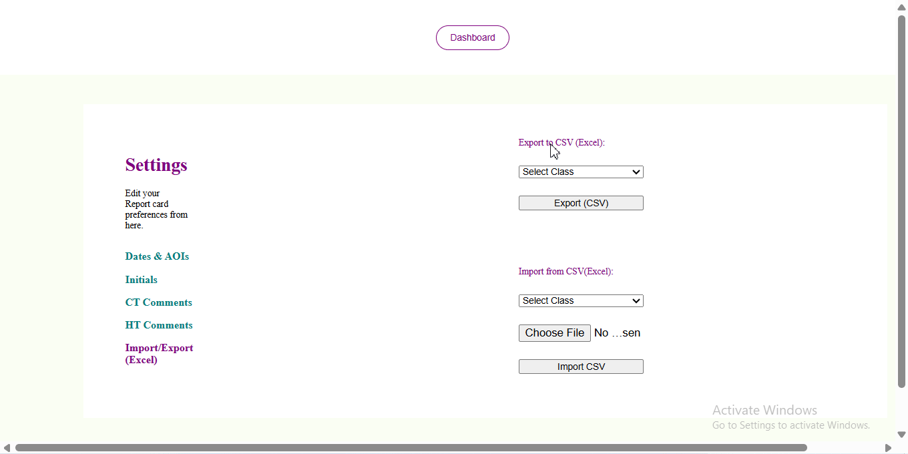
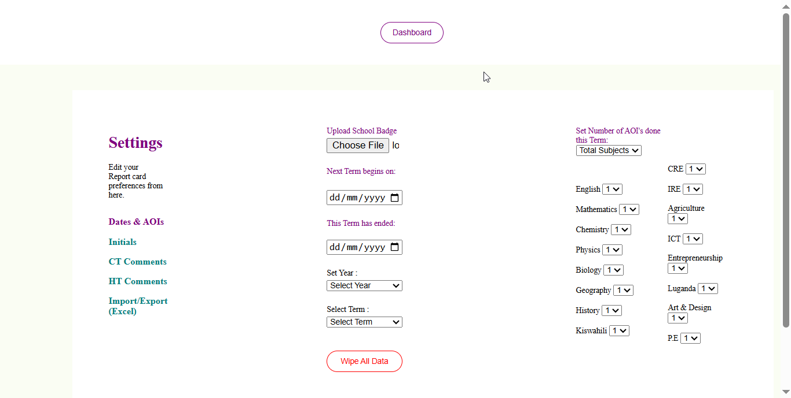
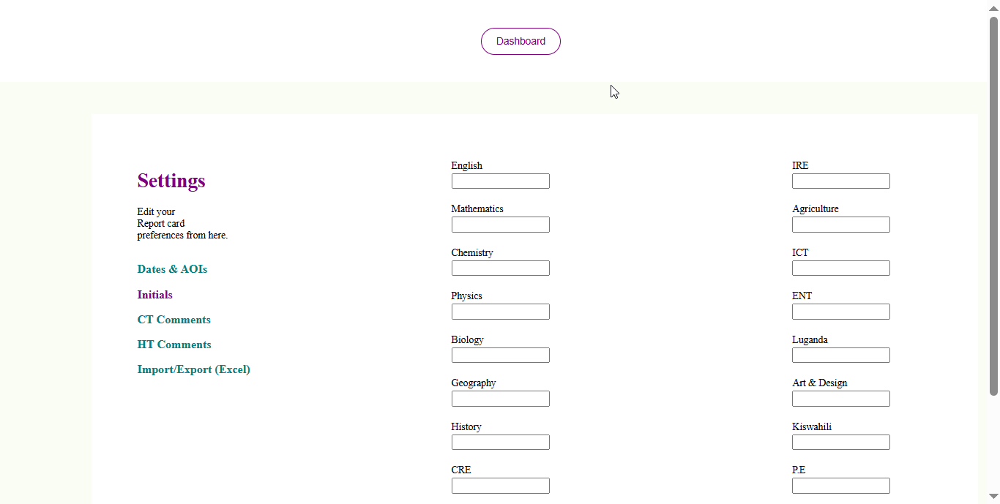
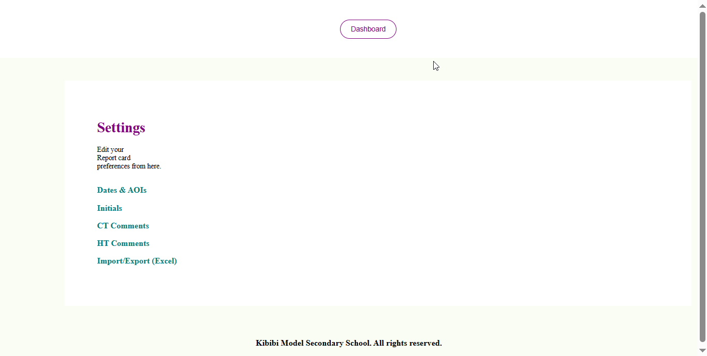
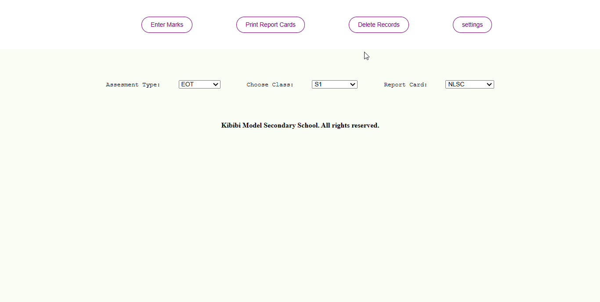

Generate Secondary School Report Cards with Ease
Process & Print report cards with an Excel-like interface. Shuleni for secondary schools v1 is available as a desktop application for Windows PC.

Familiar Interface. Lots of Customizations.
Shuleni for secondary school v1 has the familiar Excel-like interface which makes it very easy to use. Users familiar with Microsoft Excel will find no challenges using it.
This version comes with many user customizations including the ability to upload custom school badge, set custom comments, import and export records, and choose from a variety of report card templates.
Student Registration

Register all students at once in an Excel-like format that also allows you to edit the student name anytime.
Saves you the hustle associated with single-student registrations.
Marks Entry
Effortlessly enter student marks for all students and all subjects of the entire class on one interface.
Easily navigate from one field (student) to another using the Enter and Tab Keys.
System Intelligence

Entries have been configured not to allow values outside the expected range. Only subjects the student offers appear on the report card.
Ensure compulsory subjects appear on report card even when the student has no marks for that subject.
User clicks on Print button to download results in PDF to a location of choice on their PC.
Backup and Restore

Export records for the entire class to CSV, save to location of choice. Import class records from CSV.
The Backup/Restore function means you can move records to a new PC and continue processing reports without any issues.
Delete and Wipe

Easily delete entire class records. Wipe entire database if you so wish. Deleting and wiping cannot be undone.
Multiple Templates

Choose from three different report card formats. NLSC which lists all the AOI tests done for the term, NLSCX with marks entered out of 20 and converted to an average of 3, and Mid-Term suitable for mid-term or B.O.T exams.
Shuleni Pricing
Shuleni Report Card Software is a buy-once-use-forever software. Schools do not have to pay monthly or termly subscription fees.
Shuleni is avalailable at a one-time fee of UGX 200,000.
Try Shuleni today
Download the Shuleni Report Card Software Demo to findout how it can benefit your school.
Download DemoReady to get started??
Call or WhatsApp to get Shuleni setup for your school.